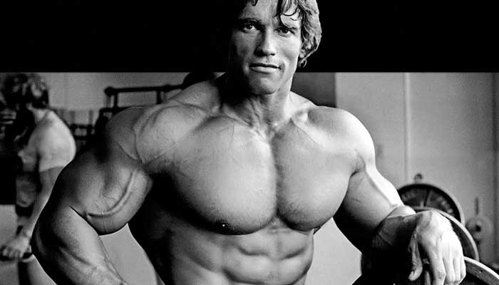

Existem vários fisiculturistas, famosos seja pelo seu grande física, seja pela sua motivação e dicas que
dão
aos novatos deste mundo.
Iremos agora falar de alguns deles e da sua história.
Arnold Schwarzenegger

-
Arnold Schwarzenegger é um ator, fisiculturista e político, e foi governador da Califórnia entre
2003 e 2011. Dedicou-se ao fisiculturismo no começo da carreira e foi eleito Miss Universo aos
20 anos. Como ator, tornou-se símbolo de filmes de ação de Hollywood, como 'Conan, O Bárbaro', e
'Exterminador do Futuro'. Casou-se com Maria Schiver em 1976, e teve com ela 4 filhos:
Katherine, Christina, Patrick e Christopher. Em 2011, no entanto, o casamento chegou ao fim com
um escândalo: Arnold confessou ter mantido uma relação extraconjugal com a governanta da casa da
família, Mildred Patrícia Baena. Ele teve ainda um filho com ela, Joseph Baena.
--> Para mais informações
<--
-
Ronald Dean "Ronnie" Coleman, é um fisiculturista norte-americano, detentor do recorde de oito
títulos consecutivos de Mr. Olympia, feito que compartilha com Lee Haney. Ser um policial
permitiu a Coleman o tempo livre que ele precisava para treinar.Também em 1990 não só Coleman
levar o título de Mr. Texas, mas ele também levou os títulos em que os anos National Physique
Committee (NPC) Texas Championships. Em 1991, Coleman também ganhou o que provavelmente é
considerado um dos mais prestigiados concursos de fisiculturismo amador, Mr. Universo.
-->
Para mais informações <--
>>>>>>> b9c6a574fd17dec94e2ca083b1eb29c4bf3856b7